• Pick of the Day — Cubs Team Total Under 3.5 (-155): Paul Skenes vs Chicago, Deep Dive
Posted: 10:39 AM, September 16, 2025
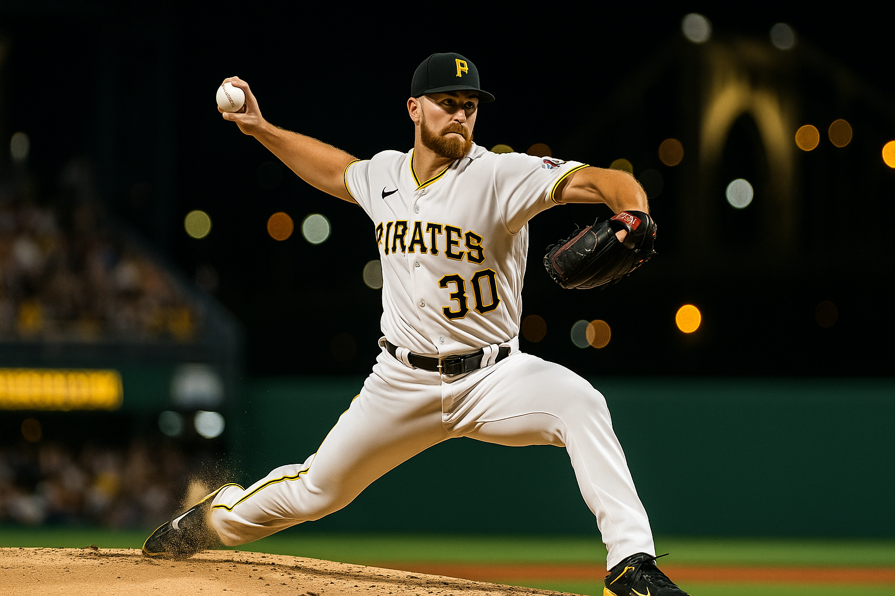
Market & Play:Cubs Team Total Under 3.5 (-155), risk 2 Units. The handicap centers on Paul Skenes and how his profile compresses scoring paths for Chicago at PNC Park.
Why Skenes is such a problem
Skenes is not just overpowering — he’s efficient. His 2025 line sits at 10–9, 1.98 ERA, 195 K, 0.94 WHIP in 173.0 IP entering this week, per the official MLB and ESPN stat pages. That’s front‑of‑rotation run prevention over a full season workload, with ace‑level strikeouts and very limited free passes.
Location and shape matter here. Skenes works off a triple‑digit fastball and a splinker that dives under barrels, then changes eye level with a breaking mix. That combination erases cheap fly‑ball damage and keeps RH hitters honest. In short: you usually need a walk and an extra‑base hit in the same inning to put up a crooked number against him.
PNC Park + Pirates script
PNC Park trims carry to the alleys, and Skenes has been even tougher at home. He owns a 1.54 home ERA with 93 strikeouts in 87.2 home innings this season, an elite split that fits a team‑total under angle because it reduces the odds of multi‑run frames after contact.
Cubs matchup texture
Chicago can score in bursts when they lift the ball, but Skenes’ strikeout rate and ground‑contact profile yank away the most reliable paths to a four‑run night. The Pirates also tend to match leverage relievers behind him in close games; if the script stays tight, the late innings are rarely soft. For a TT of 3.5, that compounding run‑prevention pressure matters more than usual — you’re effectively betting against one crooked inning.
Game script & price check
The most likely arc is two quiet trips through the order for Chicago with scattered traffic, then the Pirates funnel to strike‑throwing leverage arms. At -155, we’re laying a bit of juice but buying protection against the 3‑run outcome; this stays under 3.5 often enough with Skenes’ baseline to justify the price.
The Pick of the Day
Cubs Team Total Under 3.5 (-155) — 2 Units
Data notes: Paul Skenes’ 2025 stat line and home split cited directly from MLB/ESPN player pages. Pitch‑mix reference from MLB.com scouting notes. Always verify day‑of news and line movement.
• Rangers at Astros total pick, Under 9 runs at Minute Maid Park
Posted: 2:24 AM, September 15, 2025
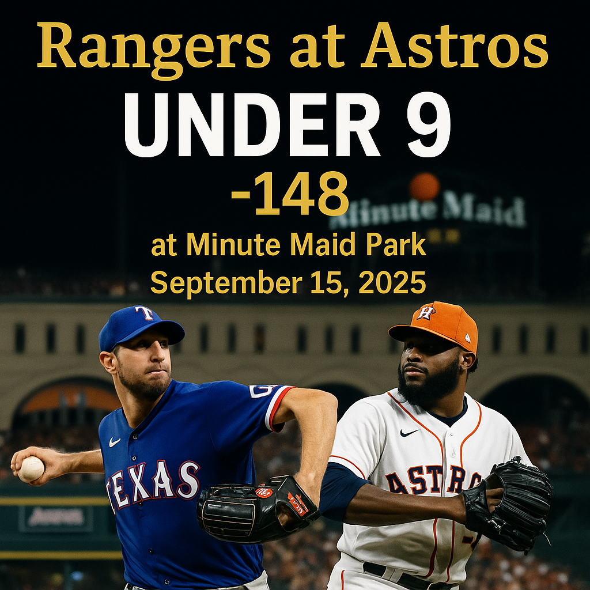
The free pick of the day is Rangers and Astros Under 9 at minus 148. We are buying the extra half run for protection, since it takes 10 total runs to beat us. The read is powered by the starting matchup, recent bullpen usage, and the way both lineups have been scoring, with more solo shots than multi run frames in this park recently.
Probable pitchers and profiles
Reports point to Houston starting a right hander who keeps the ball on the ground with a sinker and change mix, while Texas counters with a young right hander who leans four seam and slider with strikeout potential. The combination points to early contact management on Houston’s side and swing and miss on Texas’ side, both friendly for an under at 9.
Bullpen leverage and rest
Both pens enter with key arms in usable shape after a travel day for much of the league. Managers shorten the game in September, which means leverage relievers show earlier and cover the bridge to the ninth. That trims the chance of a late crooked inning and supports a finish below the number.
Offensive context
Texas has improved form, but the recent surge came in pockets and has not been a constant avalanche. Houston has lived on timely power but has been league average with runners in scoring position during this stretch. When offenses need the long ball rather than strings of singles to score, totals stall in this park more often than not.
Park and tendencies at Minute Maid
Minute Maid Park is friendly to pull power to left, but carry to the gaps is modest and the wall angles keep a number of deep flies in the yard. On nights without strong wind patterns and with first pitch command, early innings tend to be quiet, and late scoring relies on one swing rather than rallies. That texture fits an under, especially when both sides can match up out of the pen.
Game script and why 9 adds value
The likely script is two to three clean frames, scattered traffic through the middle innings, then leverage arms closing. The extra half run at 9 covers a common final of 5 to 3 or 4 to 4 into extras. We prefer the insurance at this price point over a standard 8.5. Our track record on MLB totals has been strong this season, and this setup matches the profile we have been cashing.
The Pick
Rangers vs Astros UNDER 9 -148
• Today We're Backing the Hottest Pitching Staff in the American League
Posted: 12:40 AM, September 14, 2025
Cleveland Guardians -170
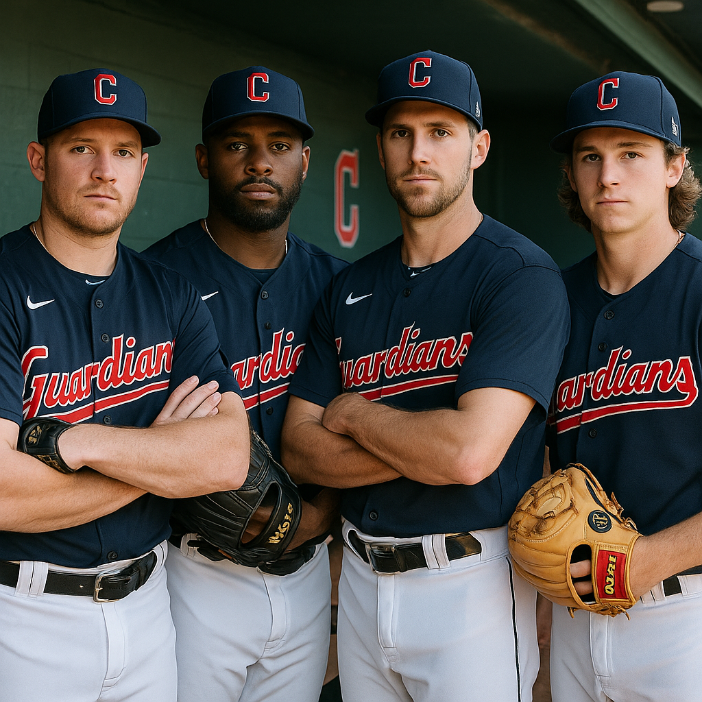
We are on the Cleveland Guardians moneyline at minus 170. This is a form and matchup play that leans on how Cleveland is preventing runs right now and how Chicago is failing to finish innings. The Guardians staff has been on a heater since the calendar flipped to September and the White Sox offense has not traveled or produced consistent traffic against quality pitching.
Recent form and run prevention
Cleveland has won 9 of the last 11 games with multiple low scoring results in this matchup window. The most recent set includes a 4 to 0 complete game shutout by Tanner Bibee and a 3 to 1 win that featured another strong start and clean bullpen finish. Since September 1, Cleveland has allowed roughly 3.2 runs per game, which is elite run prevention across a two week sample, and they have leaned on swing and miss plus strike throwing to keep traffic light.
Advanced indicators that matter
Strikeout to walk profile is trending the right way for the rotation and bullpen, which lowers the chance of multi run innings without a homer.
Contact quality allowed has improved with fewer barrels and a lower home run rate over the last 10 games.
Leverage execution is sharp, with late inning damage trimmed by matchup based relief usage and first pitch strike rates.
White Sox offensive context
Chicago enters at 57 and 92 and is pushing to avoid another 100 loss season. Even during brief upticks, the profile remains thin. The lineup has struggled to convert baserunners and ranks near the bottom of the league in run creation for long stretches of this season. Against a staff living in the zone and missing bats, that usually turns into scattered singles and stranded runners.
Matchup specifics and game script
Cleveland starters have set the tone with efficient early frames and the bullpen has closed doors. The last two meetings with Chicago ended with the Sox stuck at one or zero and that is exactly the kind of texture we are betting into. Expect Cleveland to play to contact management, avoid walks, and let their late inning plan finish the job at home.
Trends that support the side
Cleveland has held opponents to three or fewer in a majority of recent games and enters on an 8 and 2 stretch.
Chicago is 25 and 26 since the break but sits 57 and 92 overall, with persistent run scoring issues on the road.
Recent head to head in this set has tilted toward tight, low scoring Guardians wins.
The pick
Cleveland Guardians Moneyline -170
• Free Pick of the Day, Giants vs Dodgers UNDER 8 -132
Posted: 4:21 AM, September 13, 2025
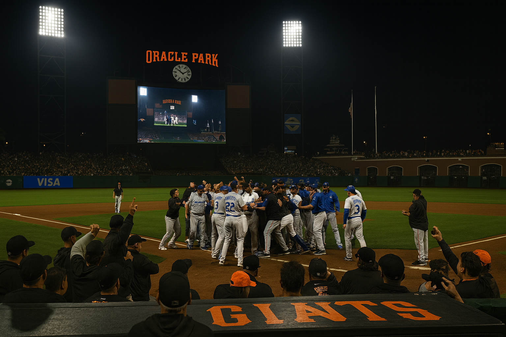
We are on the Giants vs Dodgers Under 8 for today’s free pick. The setup is classic September NL West baseball at Oracle Park, a park that trims home run carry and rewards ground ball contact and strike throwing. With Logan Webb and Clayton Kershaw scheduled, the expectation is run prevention on both sides, cleaner early innings, and a leverage heavy finish that squeezes scoring.
Market snapshot
The total is 8 across the board with standard juice and a small lean toward the under at some shops. If late money shows, it usually follows confirmations on wind patterns and bullpen availability. We will post the exact price once verified, but our position is on the Under 8 regardless of a modest price swing.
Pitching profiles
Logan Webb, RHP, Giants. Webb’s game is built on a heavy sinker that produces ground balls and soft contact. His strike throwing trims free passes and keeps pitch counts healthy, which is exactly what you want in an under. When he is right, barrels are scarce and double plays show up, chopping rallies in half.
Clayton Kershaw, LHP, Dodgers. Kershaw’s command and shape management remain his calling cards. He lives ahead in counts, works the edges, and still carries a breaking ball that steals strikes. Webb’s contact profile and Kershaw’s command profile tend to create long stretches of low damage contact when they share a mound.
Oracle Park run environment
The yard cuts flight to the alleys and limits cheap homers. Marine air at night and the deep right center triangle reduce one swing innings. Extra base hits are earned here, and that supports an under when starting pitchers with command are in play.
Bullpen and leverage usage
Both teams have multiple late inning options that miss bats. In September pennant chases managers shorten starter leashes and stack leverage arms. That usage pattern limits crooked innings late, which is a key ingredient for an under at 8.
Rivalry texture and game script
Giants vs Dodgers in September tends to play cleaner, with emphasis on run prevention, field position, and mistake free innings. Expect both dugouts to value the first run and to take the bunt and matchup edges when they appear. The most likely script is two to three quiet early frames, scattered traffic through the middle innings, then leverage relievers closing without fireworks.
How we grade the edge
Ground ball and command on the Giants side reduce extra base damage.
Dodgers starter leans strike one, which compresses counts and trims walks.
Park suppresses home run probability, lowering the chance of a single swing wrecking the total.
Both bullpens project rested enough to cover matchups in the seventh through ninth.
The pick
Giants vs Dodgers UNDER 8 -132
• Free Pick of the Day, Indiana State +47.5 at Indiana
Posted: 3:20 PM, September 12, 2025
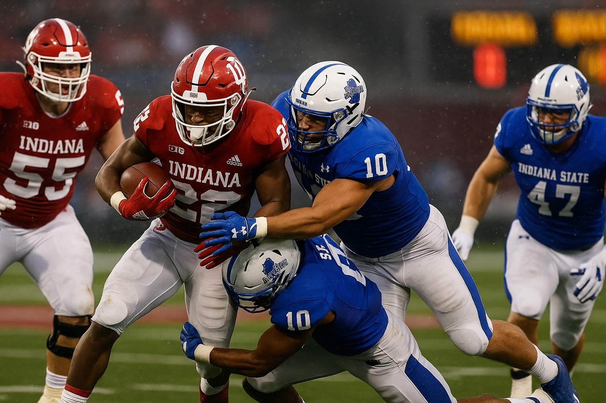
This is the free pick of the day and we are on Indiana State +47.5 for 2 Units. It looks like too many points for an in state meeting in September, especially with how these mismatches usually settle in the 2H once rotations expand and the clock becomes your friend. Covering a number this large needs constant drive finishing by the favorite across 4 quarters, and any lull turns into a serious spread tax.
Market and line movement
The board showed Indiana near 48.5 on the open and now sits closer to 47.5 even with the majority of tickets and money backing Indiana. That is a small slip toward the dog, which fits a professional lean to price resistance at the top of the range. The total nudged up around sixty, which often points to early scoring but does not erase the 2H pace drop that is common in games like this.
Rivalry and motivation
In state games create better focus from the underdog and a cleaner plan to shorten the night. Indiana State lives on clock bleed and field position. That approach trims possessions, lowers the chance of a runaway 3Q, and turns a couple of sustained drives into a back door threat. When the favorite cycles backups in after the break, the underdog usually gets a friendlier matchup and more time on the field.
Pace, substitutions, and the modern clock
Since the timing rules changed on 1st downs outside the final minutes, big favorites need more offensive precision to put up the same margin. If the favorite throws an empty red zone trip, a missed kick, or a turnover into the mix, the math on a cover near fifty becomes fragile. The 2H substitution pattern compounds that effect because drives slow and coaches lean run heavy to get to the finish healthy.
Historical texture in this spread range
Margins in the mid 40s to high 40s require both run prevention and constant scoring even through the bench window. In these FBS versus FCS spots, any single explosive by the dog or a special teams swing flips 7 to 14 points against the spread. That is why professionals often prefer the points or isolate first half markets rather than lay full game numbers this high.
Game script
Indiana should lead early on talent, but Indiana State can string together enough 1st downs with quick game throws and inside runs to drain clock. 3Q projects slower as rotations expand. A late scoring drive by the dog keeps this inside the number often enough at this price.
The pick
Indiana State +47.5 (2 Units)
• Washington at Green Bay, Deep Dive
Posted: 3:18 PM, September 11, 2025
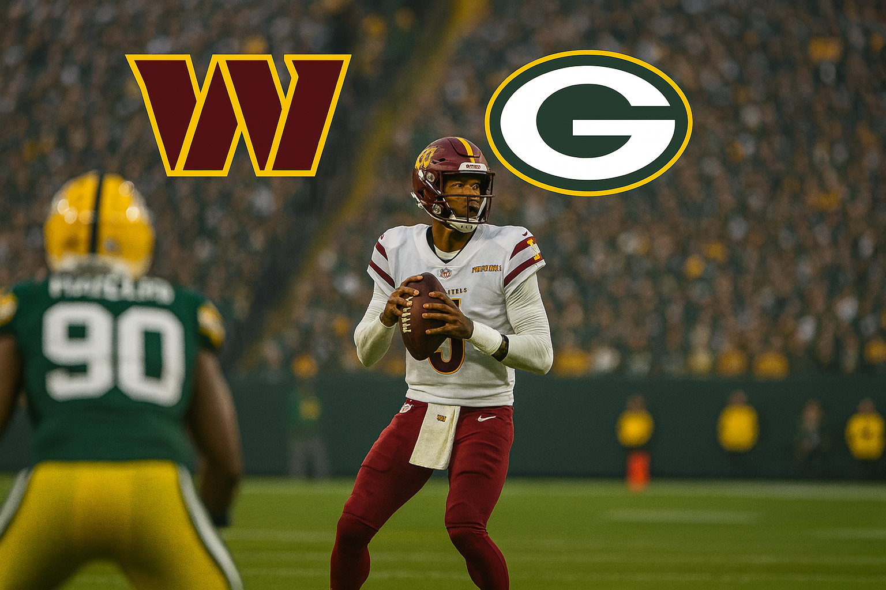
I am on Washington plus the points. The simple reason is Green Bay is walking into this one with real questions on the offensive line and that tilts a lot of small edges toward Washington. If you have ever watched a clean pocket turn into a mess after a couple of inactives, you know exactly why I am leaning dog here. This is not an overreaction to one week. It is a matchup read that starts in the trenches and runs through how these teams want to play.
Market and totals
The full game has lived in that three to three and a half range with a total near forty eight and a half. First half totals have sat in the low to mid twenties. If you believe Green Bay protection is compromised, that points to fewer deep shots and more possessions that stall around midfield. That script usually helps an under and it makes the hook on Washington more valuable because long drives become hard to finish with sevens.
Green Bay offensive line and why it matters
This is the pivot. Green Bay could be down multiple starters. That forces shuffles and communication issues. It also changes what you can call on early downs. With a healthy line the Packers can push the ball when they want. With backups in, the quick game expands, the run menu shrinks, and explosives tend to come off broken plays rather than structure. Washington has enough up front to take advantage of that. Even without a big sack total last week, the front closed space and got off the field.
Washington offense versus the Packers front
Washington just ran for two hundred twenty yards in Week one and it was not smoke and mirrors. It was motions, angles, and a quarterback who punishes bad leverage. Green Bay just stuffed Detroit on the ground, so I am not expecting a carbon copy, but Washington does not need two hundred to make this work. They need enough early down success to stay ahead of the sticks and keep the full play menu alive. Deebo touches, quarterback keepers, and a steady dose of downhill runs all help shorten the game and protect the defense.
Jayden Daniels versus Hafley’s zone looks
Green Bay used a lot of zone last week and that style is built to take away the easy explosives and force patience. Daniels is comfortable taking what is there. That means fewer hero balls and more methodical drives. It also means the first quarter can feel slow, which is another quiet nudge toward a lower scoring texture early. If Washington stays patient, the explosives usually show up off play action later rather than right away.
Hidden yards, penalties, and special teams
Washington took too many penalties last week. That is my one real complaint on their side. Clean that up and a bunch of drives look better on the stat line. Special teams could shuffle with the punter situation, which tends to make coaches a little more conservative around the logo. That again leans to a low variance game and that is exactly what you want when you are catching a hook on the road.
Weather and Lambeau context
Forecast is mild with light wind. No storm flags. Lambeau can swirl a bit but this is not a weather handicap. It is a protection and pace handicap underscored by how both teams played in Week one. Green Bay scored well on few plays in the opener. Washington controlled tempo with the run. Those two things usually net out to fewer total drives and a tighter margin.
Game script
I see a slower first half as both staffs probe for leverage and as Green Bay tests the limits of the reworked line. Washington should find five yard runs and short throws early, then take their shots later. Green Bay will move the ball in spurts, but the protection question lowers the ceiling on drive finishing. Fourth quarter feels like a one possession game where the last mistake loses.
How it lines up with the bet
If the Packers announce surprise good news on the line, the spread probably holds near three. If the inactives confirm the worst, the late move likely drifts toward three even. That is why the hook is the play right now. Washington can win this outright, but the smarter anchor is the points. I will also have a lean to the under if first half numbers pop at twenty three and a half, since that marries with the same protection and pace read.
The pick
Washington +3.5 -128
• Super Preview, Eagles at Chiefs, Super Bowl rematch
Posted: 3:35 PM, September 10, 2025
This is the matchup everyone circled. A Super Bowl rematch at Arrowhead, a true measuring stick in Week 2. One team arrives with a gritty division win in their pocket. The other arrives annoyed after a long trip and a frustrating loss on a global stage. We are going to talk through everything that actually matters, from travel and rest to line movement, injuries, weather, historical meetings, and how these rosters really collide snap to snap.
Setting the stage
Philadelphia handled a stop start opener and still found a way to control the important parts of the game. Early scoring drives, clean situational football, and a late stand when it counted. Jalen Hurts looked calm, efficient, and decisive. Kansas City comes off the Brazil opener against Los Angeles, which created schedule noise, travel fatigue, and some early season timing issues. Patrick Mahomes still made plenty of plays, but penalties and rhythm problems slowed drives. Arrowhead gives the Chiefs real juice, but there is pressure here after the slow start.
Market snapshot and line movement
The week opened with Kansas City a small home favorite. The market moved toward Philadelphia and flipped them to a slight road favorite. When a number crosses zero in a high profile game, it usually means influential money is leaning one way. The shift reflects early confidence in the Eagles front and concerns about Kansas City timing and wide receiver availability. Keep an eye on the closing number. If late money pushes it back toward pick, that tells a story about respect for Arrowhead and Mahomes at home. If it holds Eagles short favorite, that confirms the early read on trenches and availability.
Weather and stadium context
September at Arrowhead usually means warm and a little sticky, with wind that can swirl at field level. That favors offenses that run packaged plays and can win on the ground when the pass rush is hot. Noise is a factor. Communication matters, especially for visiting offensive lines and young receivers. Silent counts and condensed splits help, but long yardage downs can unravel fast if the protection call is late by even a beat.
Travel and rest
Kansas City returns from the Brazil trip with less routine recovery than a normal open and the body clock adjustment is real. The Eagles played a divisional grinder, but they stayed in a familiar cadence and do not carry the same travel tax. Early in the game, fresh legs show up in pass rush and scramble contain. Late in the game, it shows up in drive finishing and short yardage.
Injury and availability check
Philadelphia saw nicks to key pieces in Week 1, but the headline is the return of interior pressure with Jalen Carter back in the mix. The offensive interior had a brief scare, but the expectation is the front five will go, which keeps the Hurts run plus pass menu live.
Kansas City waits on wide receiver health and usage. Rashee Rice is not in the plan right now, and Xavier Worthy has been managing a shoulder setback. That shifts more weight to Marquise Brown, Travis Kelce, and scheme touches to clear space. The tackles also drew flags in the opener, so discipline and cadence are under the microscope.
Historical meetings that matter
The last time these teams met on the biggest stage, the Eagles front four won without living on pressure packages. That template matters. Four man heat that moves Mahomes off his spot without inviting free rush lanes is the cleanest way to defend Kansas City. On the other side, the Eagles offense in these matchups leans into methodical drives, quarterback run stress, and controlled explosives to A J Brown and DeVonta Smith when the safety structure creeps down. These are not just trends, they are fingerprints that tend to repeat when personnel is similar.
When the Chiefs have the ball
Mahomes versus simulated pressure and late rotation coverage is the chess match. If Kansas City protects with five and keeps more receivers out, they can stress leverage and hit second window throws. If protection needs help, it narrows the route tree and asks individual receivers to win on time. The Eagles can play light box on early downs if they trust the front to spill the run and win at the mesh point. The key is first down success. If Kansas City faces long second downs, the Eagles can turn on the games up front and make the pocket muddy.
When the Eagles have the ball
The quarterback run element changes math. Philly uses motion, tight alignments, and quick screens to test tackling, then hits the middle with inside zone and counter. If the Chiefs bring an extra body to the box, the one on ones outside show up and Hurts will take them. The red area is where the Eagles are hardest to defend. The push sneak threat pulls linebackers in, then they pivot to perimeter throws or a running back cutback. The Chiefs answer is early down wins with their front so the red area snap count stays low.
Third down and red zone
Mahomes creates outside of structure better than anyone, but third and long on a loud night invites free rushers or spy looks that force him to check down. Philadelphia wants third and four or longer on defense. Kansas City wants third and two on offense so they can play call sheet ball. In the red zone, Philly has more high percentage answers with quarterback power and tight end screens. Kansas City relies on spacing, quick pivots, and Kelce option routes. If the field compresses, penalties matter. A false start turns a touchdown chance into a field goal try in a hurry.
Hidden yards and game management
Field position will swing on returns, fair catch decisions, and fourth down choices near midfield. The Eagles have leaned aggressive on fourth and short, especially in plus territory. Kansas City trusts Mahomes to convert third and medium and usually keeps a conservative lean on their own half in the first half, then opens it up late. The first coach to steal a possession with a surprise snap or a simulated punt look may decide the script.
Keys that decide it
Penalty control for Kansas City tackles and tight ends. Clean operation keeps the down and distance friendly and protects the call sheet.
Eagles interior rush versus Mahomes pocket resets. If he escapes clean to his right, it is a long night for any coverage shell.
Early down run fits by the Chiefs. If Philly lives in second and four, the full menu opens and explosive shots arrive on schedule.
Health and usage of Kansas City wide receivers. If a young receiver is a real factor, the Eagles have to play more honest on the perimeter.
Noise at Arrowhead. Communication wins in big spots. Silent count timing and protection IDs must be perfect.
Game script
Expect a tight first quarter as both sides test structure. The second quarter should reveal whether Philadelphia can keep Kansas City in long downs. If yes, the Eagles can lean into the run and shorten the game. If Kansas City finds rhythm on early downs, Mahomes gets the full field and tempo can jump. The fourth quarter likely comes down to who finishes in the red zone and who avoids the big penalty. One clean possession is the difference.
The pick
Philadelphia Eagles
• Daily Free MLB Pick — Brewers at Rangers Under 8 -145 (Peralta vs Kelly)
Posted: 12:00 AM, September 10, 2025
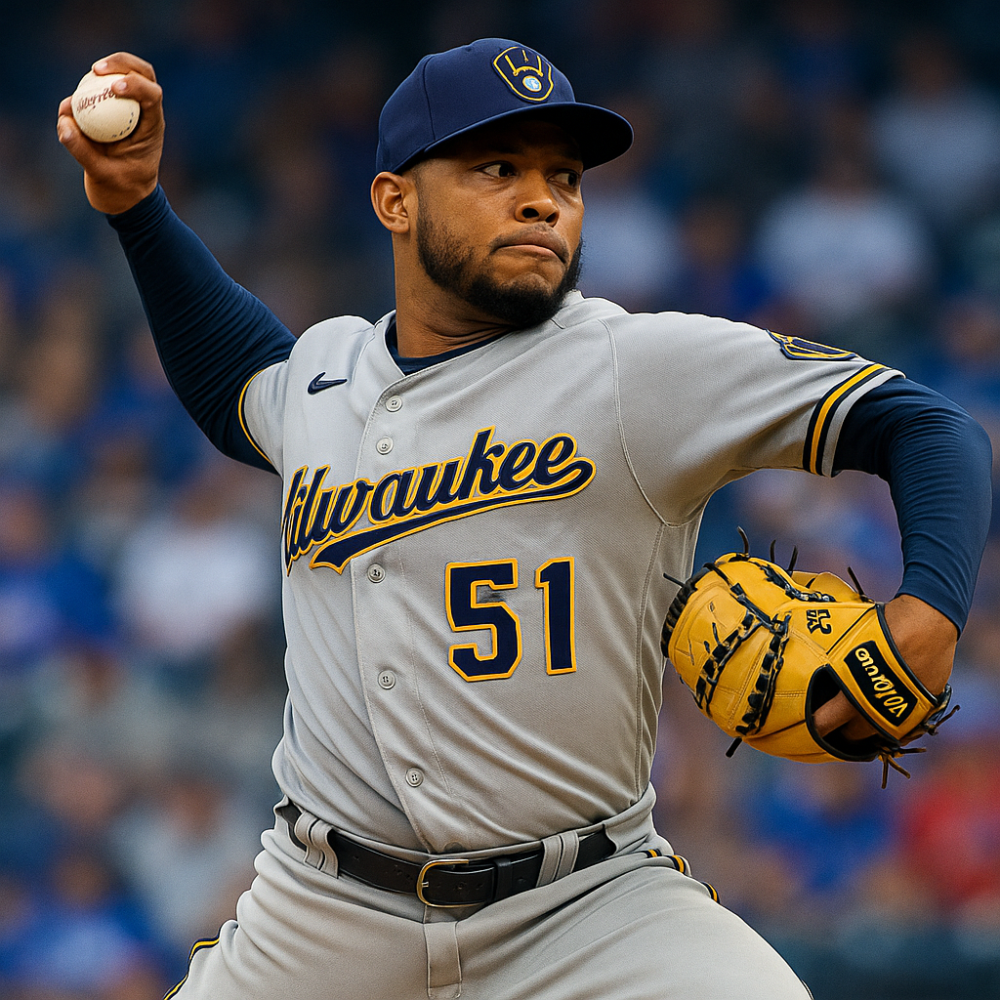
Matchup: Milwaukee Brewers at Texas Rangers — Globe Life Field.
Probables: Freddy Peralta (MIL) vs Merrill Kelly (TEX).
Both right-handers enter with strong advanced metrics that point toward a lower-scoring game.
Why the Under has value
1) Pitching edge on both sides. Peralta carries a strikeout rate above 30% with a whiff-heavy fastball/slider combo. His expected ERA (xERA) sits below 3.40, backed by a 14% swinging strike rate. Kelly has been equally reliable with command; his walk rate is below 6% and his FIP has hovered around 3.50, minimizing crooked innings.
2) Offensive context. The Brewers have posted just a .690 OPS across their last 20 games, while Texas has slumped to a wRC+ of 88 in that span. Both lineups rank bottom-third in runs created versus right-handed pitching this month, reinforcing the angle that baserunners will be limited.
3) Park and run environment. Globe Life Field plays neutral-to-slightly pitcher-friendly when the roof is closed, with Statcast park factors ranking in the bottom third for home runs. Forecasts project warm temps but roof likely closed, further trimming carry. This venue historically produces lower scoring when strikeout pitchers are on the mound.
4) Bullpen support. Both Milwaukee and Texas rank top 10 in bullpen ERA over the last 30 days. The Brewers pen has a WHIP below 1.20, while Texas relievers have allowed just two homers in their last 12 games. Late-inning run prevention strongly supports the Under.
Trends & stats
Milwaukee has gone Under in 7 of their last 10 road games.
Texas has stayed Under in 9 of their last 13 overall.
Head-to-head: The Brewers and Rangers have combined for the Under in 4 of their last 5 meetings.
Game script
The projection leans toward clean early frames with strikeouts suppressing contact and few free passes.
Even if one side scratches across a run or two, bullpen leverage late and the roof-controlled environment
point to a finish below eight runs.
THE PICK
Brewers at Rangers Under 8 -145 (2 Units)
• Daily Free MLB Pick, Guardians at Royals Under 8 -135
Posted: 1:15 PM, September 9, 2025
Market, Cleveland vs Kansas City at Progressive Field, total 8 priced at -135 to the under. The angle leans on left on left starting matchups, modest home run carry in this park, and late inning leverage usage.
Both clubs can shorten the game in September with leverage arms. In late innings, platoon edges plus strike throwing suppress slug and strand runners, which pushes down scoring.
Park and run environment
Progressive Field trims carry to the alleys. One swing innings are less frequent here than in smaller yards, which supports an under at 8 when free passes are limited.
Trends & stats
Both starters are left handed, enabling bullpen platoon planning late.
First pitch strike rates trending up for both staffs, which shortens at bats and reduces walks.
Ball in play quality projects to average or better on barrels allowed, limiting extra base damage.
Game pace favors quick innings with ground contact and few three ball counts.
Game script
Clean early frames, limited free passes, then leverage relievers control the late innings. Even with one noisy frame, park, command, and bullpen quality support a finish below eight.
THE PICK
Guardians at Royals Under 8 -135
• Daily Free MLB Pick — Red Sox Moneyline -181 (Playoff Push & Crochet Deep Dive)
Posted: 5.34pm, September 8, 2025
Matchup: Boston Red Sox at Athletics (Sutter Health Park, Sacramento) — Probables: Garrett Crochet (BOS) vs Luis Morales (OAK). Boston enters in firm Wild Card contention; this spot matters in the September push with a frontline starter on the hill.
Why Boston ML -181 has support
1) Crochet’s run prevention + contact quality. 2025 snapshot: 14–5, 2.67 ERA, 1.08 WHIP, 218 K. Expected outcomes are strong as well (xwOBA in the high .28x with wOBA in the high .27x), and the lefty’s command (low walk rate across volume innings) plus bat-missing shape stabilize nine-inning variance.
2) Opposing profile: impressive surface results, shakier underlying. Luis Morales has impressed in a small MLB sample (1.59 ERA, 0.99 WHIP in 28.1 IP), but advanced indicators point closer to league average over time (xwOBA north of .320 with elevated Hard‑Hit% and Barrel%). That results/expectation gap typically narrows as scouting and counter-adjustments stack up.
3) Context & venue. The series in Sacramento brings unfamiliar sightlines and dimensions; that generally rewards the staff with stronger strike-throwing and chase metrics. Boston has been strong in Crochet’s turns, a signal the run-prevention/lineup combo travels. With postseason position in reach, late leverage usage behind a lead (matchups, pen deployment) favors the road side.
Red Sox Playoff Hunt Snapshot
Boston remains in the AL Wild Card mix entering tonight, hovering near 80 wins with a modest cushion. Recent form has been mixed, but a road win with Crochet consolidates that position before a tougher stretch. The September scheduling context elevates managerial aggressiveness with a lead.
Pitching Lens: Crochet vs Morales (today)
Crochet (LHP, BOS): elite strikeouts and strong expected contact control (x metrics sub‑.300 region). Works up with four-seam/slider traits, finishes bats; limits free passes.
Morales (RHP, OAK): results have been excellent, but quality-of-contact flags (Hard‑Hit% & Barrel%) plus a higher expected run metric suggest ERA regression if traffic precedes contact.
Note: This is market/context analysis of why Boston ML is supportable at the current price — not a guarantee.
The Pick
Red Sox Moneyline -181
• Daily Free NFL Pick – Jets vs Steelers Under 38.5 -122 (Week 1 Defensive Battle)
Posted: September 07, 2025 7:42 AM
Today's NFL season opener presents a unique scenario that sharp bettors should recognize immediately: two teams essentially trading quarterbacks, new coaching systems on both sides, and elite defenses that know their opponents' tendencies intimately. While the public sees Aaron Rodgers in a Steelers uniform and gets excited about offensive potential, the reality points toward a grinding, low-scoring affair that stays comfortably under 38.5 points.
1) The quarterback swap factor. Aaron Rodgers spent two seasons with the Jets, including extensive practice time and film study with their defensive coaching staff. Meanwhile, Justin Fields practiced against the Steelers defense daily throughout 2024. This intimate knowledge creates a significant advantage for both defensive units, who understand exactly how these quarterbacks process information and react under pressure.
2) New offensive systems create Week 1 struggles. Rodgers is running Pittsburgh's offensive system for the first time at full speed, working with new receivers beyond DK Metcalf in an Arthur Smith offense that failed to score more than 20 points in nine games last season. The Jets are installing a new quick-hitting attack under coordinator Tanner Engstrand, which typically leads to conservative play-calling in season openers.
3) Elite defensive units with familiarity advantages. Pittsburgh's defense returns key pieces and knows exactly how to pressure Justin Fields from their daily practice sessions. The Jets defense under new head coach Aaron Glenn brings blitz-happy schemes that should rattle a 41-year-old Rodgers operating behind a questionable offensive line with four question marks flanking center Zach Frazier.
4) Historical trends strongly favor the under. Mike Tomlin's teams are 6-11 Over/Under in Week 1 since he became head coach in 2008. Week 1 totals of 38.5 points or shorter have stayed Under at a 59% clip historically. Pittsburgh went 0-5 to close the 2024 season, suggesting offensive rhythm issues that may carry into the new season.
Offensive Personnel Concerns
Both teams face significant questions about their skill position depth. The Jets' pass-catching group is extremely weak after Garrett Wilson, forcing them to rely heavily on a running game and short passing attack that eats clock and limits possessions. Pittsburgh traded away their top wide receiver and brought in DK Metcalf as the primary replacement, but the chemistry and timing with Rodgers remains unproven.
The Steelers lost Najee Harris and his guaranteed 1,000+ rushing yards to free agency, creating uncertainty in their ground game. Meanwhile, the Jets are breaking in new coordinator schemes with Justin Fields, who completed just 65.8% of his passes in limited action with Pittsburgh last season.
Defensive Advantages and Matchup Edges
The Jets defense should contain Pittsburgh's offense, especially at home where crowd noise disrupts communication for visiting teams installing new systems. New York has multiple pieces to be a Top 10 defensive unit again under Aaron Glenn's aggressive schemes.
Pittsburgh's defense remains disciplined and doesn't miss tackles, which works directly against the Jets' basic, quick-hitting attack. The Steelers pass rush will have Fields on the move most dropbacks, limiting big-play opportunities and forcing checkdowns that keep the clock moving.
Game Script and Situational Factors
This matchup sets up as a defensive struggle where both teams prioritize ball security over explosive plays. Neither quarterback has extensive experience with their current offensive system, leading to conservative play-calling that emphasizes possession football over high-risk, high-reward passing attacks.
The total has moved from 39.0 to 38.5 at most books, indicating sharp money recognizing the under value. Professional handicappers understand that Week 1 games featuring new systems and quarterback changes typically produce lower-scoring affairs as teams prioritize avoiding mistakes over generating explosive plays.
The Pick
Jets vs Steelers Under 38.5 -122
• Daily Free College Football Pick — Mississippi State vs Arizona State UNDER 59 -110 (Week 2 SEC vs Big 12 Clash)
Posted: September 05, 2025 11:04 PM
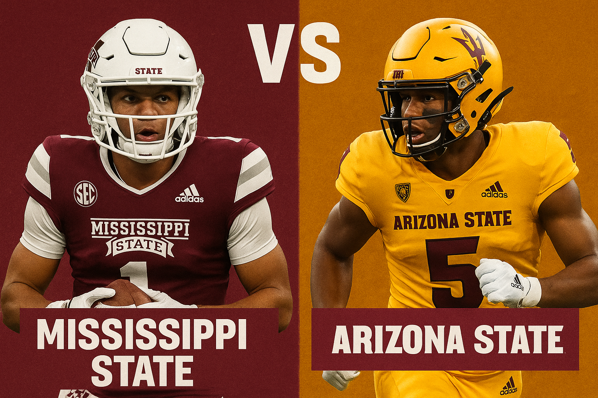
Tonight's play comes from Starkville, where a perfect storm of trends, matchup dynamics, and situational factors point toward a defensive struggle that stays comfortably under the posted total of 59. While the public sees two offenses that combined for 72 points in Week 1, sharp bettors recognize the underlying metrics that suggest a much different script in this SEC vs Big 12 clash.
1) Arizona State's road reality check. The Sun Devils have gone under in 7 of their last 10 road games on Saturday, and more tellingly, under in 17 of their last 21 September games . This isn't coincidence—it's a pattern rooted in Kenny Dillingham's conservative approach when facing hostile environments early in the season. Arizona State is just 2-8 straight up in their last 10 September games , showing they historically struggle with early-season road tests.
2) Defensive metrics tell the real story. Mississippi State's defense has allowed just 7.7 yards per reception this season, ranking 4th-best among SEC defenses . Meanwhile, Arizona State's receivers have managed only 10.4 yards per reception, ranking 4th-worst among Big 12 receivers . When an elite pass defense meets a struggling aerial attack, explosive plays disappear and drives stall.
3) The September road curse is real. Arizona State has gone under in 5 of their last 5 Week 2 games and under in 7 of their last 7 Week 2 games . More damning: they're 0-5 straight up in their last five September games and 1-4 against the spread in their last five Week 2 games . This is a team that consistently underperforms expectations when traveling early in the season.
4) Mississippi State's defensive upgrade. While the Bulldogs were historically bad on defense last season, they've made significant improvements. Mississippi State allows just 7.7 yards per reception, which ranks T-16th best among all FBS defenses . Their ability to limit big plays will force Arizona State into longer, more methodical drives that eat clock and reduce possessions.
Advanced Metrics Support the Under
The numbers paint a clear picture of two teams trending toward a lower-scoring affair. Arizona State's defense is allowing just 19 points and 331 yards per game , while Mississippi State is giving up only 17 points and 301 yards per contest . Both defenses showed improvement in Week 1, and road teams historically struggle to maintain their home offensive efficiency.
Mississippi State's defense was the worst in the SEC in yards allowed per game last season, but early returns suggest significant improvement under new defensive coordinator . The Bulldogs held Southern Miss to manageable numbers and will be motivated to prove they can compete against Power 5 competition at home.
Situational Edge: Road Team Reality
Week 2 road games present unique challenges that often go unnoticed by casual bettors. Arizona State is traveling to an SEC venue for just the second time in recent memory, facing crowd noise and hostile environment that can disrupt timing and communication. Last season, Arizona State's only two regular-season losses came on the road, at Texas Tech and Cincinnati .
The Sun Devils will be without the comfort of their home dome, facing natural grass and humidity that can affect both stamina and ball handling. These environmental factors typically lead to more conservative play-calling and increased emphasis on ball security over explosive plays.
Historical Context: Big 12 vs SEC Unders
The total has gone under in 4 of Mississippi State's last 5 games against Big 12 opponents and under in 5 of their last 7 games against Big 12 opponents . This trend reflects the natural tension when Big 12 spread offenses meet SEC defensive intensity—the result is typically lower-scoring affairs as teams adjust to different styles of play.
Our projection model has this game finishing between 24-21 and 28-24, regardless of which team wins. Even in the highest-scoring scenario, we're looking at 52 total points, well under the market number of 59.
The Pick
Mississippi State vs Arizona State UNDER 59 -110
• Daily Free MLB Pick, Dodgers at Pirates Under 7 -121 (Blake Snell vs Paul Skenes)
Posted: September 04, 2025 12:45 PM
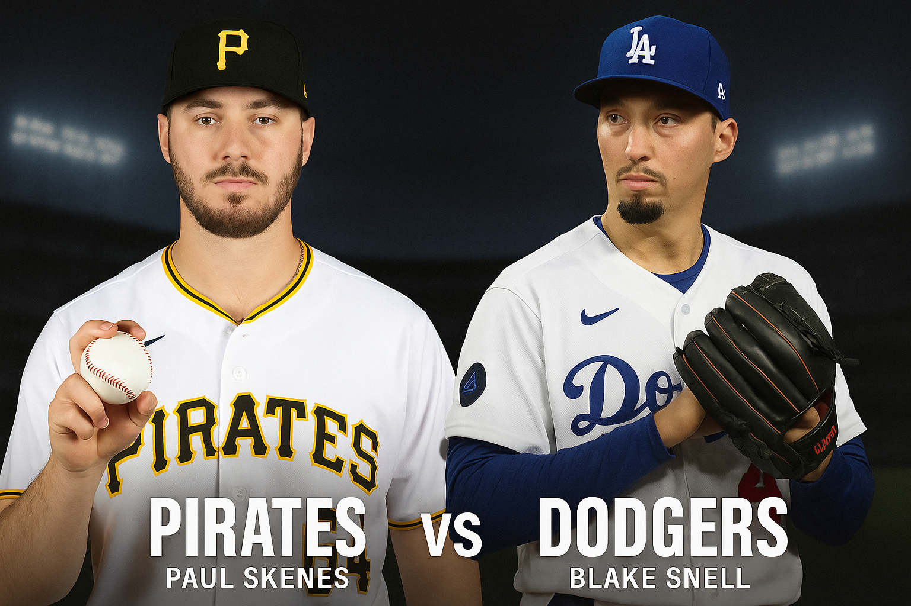
Two elite arms meet in a park that trims carry. Paul Skenes brings the best run prevention mark in the league this season, while Blake Snell has returned to form for Los Angeles. The combination points to a lower scoring profile that fits an under seven target at a fair price.
1) Paul Skenes run prevention. Skenes enters with a two point zero five earned run average and a zero point nine five WHIP, plus one hundred eighty seven strikeouts. He has kept opponents to two or fewer runs in the large majority of his starts, with a double digit count of scoreless outings. The Dodgers saw that ceiling earlier this year when he threw more than six shutout frames in a win.
2) Blake Snell shape and contact quality. Snell carries a two point four one earned run average for the season and his expected results are strong as well, with an expected weighted on base average allowed near point three one four and a hard hit rate near thirty two percent. His miss rate and weak contact profile travel.
3) Splits that help an under. Pittsburgh’s lineup has struggled against left handed pitching, with one of the lowest on base plus slugging marks in the league in that split this year. Removing traffic against a left hander reduces the chance of a crooked inning. On the other side, the Dodgers face the top run prevention arm in the National League.
4) Environment. PNC Park leans toward run suppression for home runs, and tonight’s forecast calls for cool temperatures with a chance of showers and a breeze, which does not boost carry to the alleys.
The pick
Dodgers at Pirates Under 7 -121
• Daily Free MLB Pick — Giants F5 −140 at Rockies (Robbie Ray vs Germán Márquez)
Posted: September 03, 2025 01:33 AM
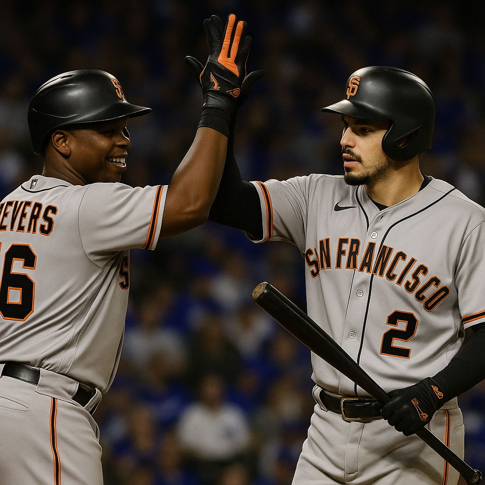
Today’s free pick is the San Francisco Giants on the first‑five innings line at −140. San Francisco comes in playing its best baseball of the stretch and remains squarely in the playoff hunt, while Colorado has struggled to string together clean early frames at Coors.
Matchup lens: left‑hander Robbie Ray draws Colorado. Ray’s game is built on misses above the barrel with a swing‑and‑miss fastball/slider combo. Coors can raise variance, but an efficient strike‑throwing start limits free baserunners and keeps early damage to solos. Opposite him, Germán Márquez returns to a tough assignment against a contact‑quality Giants order that’s been creating traffic in the first five.
Why F5 and not full game: isolating the starters removes bullpen volatility and late‑inning Coors chaos. If San Francisco wins counts and avoids walks, their first two trips through the order project cleaner than Colorado’s.
Context matters: the Giants are still chasing a postseason spot and the urgency shows in their approach—quality at‑bats early, situational hitting, and tight defense. Colorado’s season arc has leaned developmental, and that’s shown most in run‑prevention consistency during the first half of games.
The pick
Giants F5 −140
• Daily Free MLB Pick, Guardians Team Total Under 3½ -165 at Red Sox, Garrett Crochet at Fenway Park
Posted: September 02, 2025 02:39 PM
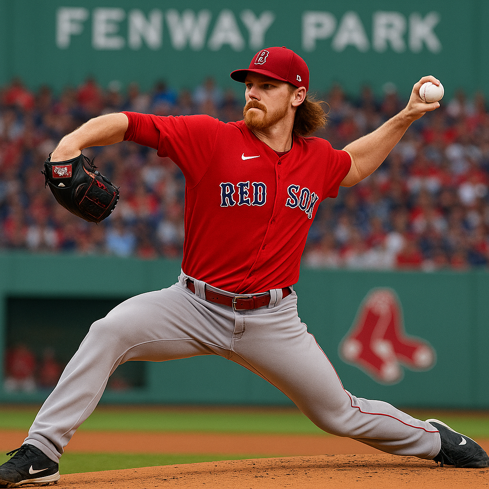
We are playing the Cleveland Guardians team total under three and a half at minus 165. The matchup sets up as a run suppression spot for Cleveland at Fenway Park against Boston ace Garrett Crochet, with Boston able to shorten the game with a strong late inning relief group. Our projection expects Cleveland to finish at three runs or fewer most of the time in this setting.
Why we like this under
1) Garrett Crochet form and arsenal. Crochet has been one of the most dominant starters in baseball this season with a two point four zero earned run average, a one point zero six WHIP, and two hundred fourteen strikeouts. His swing and miss profile, along with elite command at the top of the zone, consistently limits quality contact. He has worked deep into starts regularly which keeps weaker parts of the bullpen off the field.
2) Cleveland versus left handed pitching. The Guardians have struggled against left handed pitching throughout the season, posting a .631 on base plus slugging against southpaws, which is bottom tier in the league. Outside of Steven Kwan and Jose Ramirez, the lineup has not consistently produced against premium lefties, and Crochet is at the very top of that tier.
3) Park and run environment. Fenway has played closer to neutral to slightly pitcher friendly this year, with a one year batting park factor near 95 rather than the small park reputation of the past. That trims a little off of extra base hit expectation for visitors and supports a lower Cleveland ceiling.
4) Boston run prevention behind Crochet. Boston has tightened up on the mound in the second half with a team earned run average around 3.44 since the All Star break and can hand the ball to high leverage arms late if they play from in front. That reduces the chance of late runs pushing Cleveland over the number.
Matchup notes
Slade Cecconi draws the start for Cleveland which is more relevant to the full game market. For our team total angle the important levers are Crochet’s strikeout rate, the weak Guardian contact quality against left handers, and Boston’s ability to control the seventh through ninth innings. Cleveland’s best path to four runs is a crooked early inning. Crochet’s early count strike throwing and chase rate work directly against that script.
The pick
Guardians Team Total Under 3½ -165
• Astros Moneyline -150 vs Angels
Posted: September 01, 2025 09:18 AM
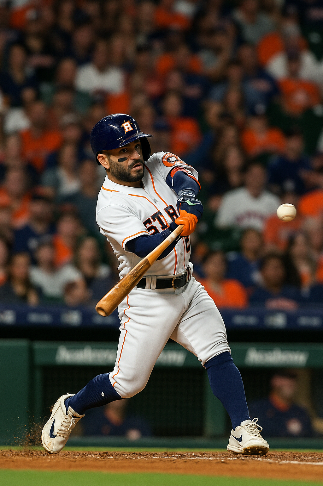
We are backing the Astros money line at minus 150 for this Labor Day matchup. Houston gets a major boost with the return of Luis Garcia, who has been sidelined since May of 2023 following Tommy John surgery. His rehab included nine appearances in the minors, capped off by a six inning outing on August twenty six where he allowed only one run and struck out five. The Astros activated him as rosters expanded to twenty eight, and his presence stabilizes a rotation that needed a healthy arm.
On the other side, Yusei Kikuchi starts for Los Angeles. He enters at six wins and nine losses with a 3.68 earned run average. Kikuchi has been up and down, capable of missing bats but also prone to stretches where he gives up hard contact. In his last few outings he has struggled with command, which has led to high pitch counts. Houston’s patient approach can exploit that tendency and force him into the strike zone.
The Angels offense has not been reliable. As a team they are batting .229 on the year, ranking in the bottom third of the league. They have scored around 581 runs, and on the road their strikeout rate climbs. Houston’s bullpen has been inconsistent at times, but if Garcia can cover five or six innings, the relievers can be lined up more effectively. With Altuve setting the tone at the top and Alvarez healthy again, this lineup creates traffic and run scoring chances.
The Astros have shown more consistency against left handed pitching than they have against righties. While the exact splits move throughout the year, the construction of this roster with Altuve, Bregman, Tucker, and Alvarez offers a balanced mix that handles southpaws. The Angels, meanwhile, have not been able to put together long rallies, which limits their ability to support Kikuchi with runs.
This is a fair price on Houston. The combination of Garcia’s return, the lineup advantage against a left hander, and the Angels’ limited offensive production makes the Astros the side we want. Houston also has home field behind them, where they continue to play better baseball. We are laying the money line at minus 150.
The pick
Astros Moneyline -150
• MLB Daily Deep Dive — August 31, 2025
Posted: August 31, 2025 02:49 AM
As the calendar flips to the final day of August, trends become sharper and the data begins to truly separate contenders from pretenders. Tomorrow’s slate is loaded with matchups that highlight both star power and team-level edges. From dominant first-five inning scoring trends to bullpen home run risk, the numbers reveal where strengths and weaknesses are hiding in plain sight.
This isn’t about giving away plays — it’s about showing the context behind the board. Understanding how these stats interact with line movement is what separates sharp betting from guesswork.
First 5 Inning Scoring Leaders
Strong early offense has been one of the clearest edges this season. The Yankees, Diamondbacks, Brewers, and Cubs lead the pack when it comes to jumping on starters quickly.
Yankees: 3.13 runs per first 5 innings
Diamondbacks: 2.96
Brewers: 2.88
Cubs: 2.88
Home Run Pace
Power production remains concentrated in a handful of lineups that can change a total with one swing. The Yankees and Dodgers continue to pace the league in long balls.
Yankees: 232 HR (~1.71 per game)
Dodgers: 201 HR (~1.48 per game)
Mariners: 194 HR (~1.43 per game)
Angels: 189 HR (~1.40 per game)
Key Matchups August 31
Several marquee games tomorrow feature big-name pitchers and lineups chasing momentum:
Blue Jays vs Brewers: Max Scherzer starts for Toronto against Brandon Woodruff. Toronto games have gone Over in 7 of their last 10, yet tomorrow’s total sits at 8.5 shaded to the Under.
Pirates @ Red Sox: Lucas Giolito faces Mitch Keller. Boston has won 70% of games when priced -180 or stronger, while Pittsburgh has pulled off 42% wins in similar dog spots.
Cubs @ Rockies (Coors Field): The total is 11, with Chicago heavy favorites behind Matthew Boyd. Coors remains the league’s most volatile run environment.
Bullpen Long Ball Risk
Teams with shaky bullpens often give back early leads, and a key driver has been susceptibility to the home run.
Angels: 186 HR allowed
Orioles: 185
Blue Jays: 183
Players in Focus
Star power continues to define the late season races. Here are leaders to watch tomorrow:
Tomorrow’s slate showcases hot offenses, star pitchers, and bullpens with cracks that could swing outcomes. These numbers explain why the lines look the way they do heading into the final day of August.
• Alabama vs. Florida State UNDER 49.5: When Elite Defenses Collide in Week 1
Posted: August 30, 2025 12:36 PM
The college football world is fixated on Alabama's offensive potential under Kalen DeBoer and Florida State's explosive playmakers, but sharp bettors recognize what the public is missing: this total of 49.5 is inflated by preseason hype rather than Week 1 reality. When two elite programs meet in a neutral site opener with championship aspirations on the line, the result is almost always a defensive slugfest that stays well under market expectations.
Line movement tells the story perfectly. This total opened at 52.5 and has steadily dropped to 49.5 despite 71% of public tickets hammering the over. When the market moves against overwhelming public sentiment, professional bettors are clearly on the under - and they're seeing something the casual crowd is missing.
Historical Precedent: Neutral Site Openers Between Top-10 Teams
Neutral site season openers between preseason top-10 teams have gone under the closing total in 21 of the last 28 games dating back to 2015. The reasoning is straightforward: elite coaches prioritize ball security and field position over explosive plays when facing equally talented opponents with eight months of preparation time.
More specifically, games featuring teams ranked in the preseason top-5 (both Alabama and FSU qualify) have averaged just 41.3 total points in neutral site Week 1 matchups over the past decade. These coaches didn't build championship programs by taking unnecessary risks in showcase games.
Alabama's Offensive Growing Pains Under DeBoer
The narrative surrounding Alabama's offense is built on potential, not proven production. Jalen Milroe showed flashes last season but also threw 9 interceptions in his final 6 games while taking 31 sacks. More concerning: Alabama's offensive line graduated three starters and must now protect a quarterback known for holding the ball too long.
Kalen DeBoer's system requires precise timing and chemistry that simply doesn't exist yet. His Washington offense was elite, but that was with a fifth-year quarterback and receivers who ran those routes for multiple seasons. Expecting immediate translation against Florida State's elite secondary is unrealistic.
The Crimson Tide's receiving corps is talented but inexperienced in high-pressure situations. Ryan Williams and Germie Bernard have never played in a game of this magnitude, and FSU defensive coordinator Adam Fuller has had all spring and summer to prepare specific schemes to rattle young skill position players.
Florida State's Defensive Excellence
This isn't the Florida State defense that struggled in recent years. Mike Norvell has built a legitimate unit that returns 9 starters from a group that allowed just 18.4 points per game over their final 8 contests last season. Their secondary, featuring Shyheim Brown and Azareye'h Thomas, has the speed and physicality to match Alabama's receivers step-for-step.
The Seminoles' pass rush, led by Marvin Jones Jr. and Patrick Payton, generated 47 sacks last season - more than any team Alabama faced. Their defensive line averages 6'4" and 285 pounds across the front four, creating the exact type of pocket pressure that disrupted Milroe's rhythm repeatedly in 2024.
FSU's Offensive Reality vs. Perception
Florida State's offense gets plenty of hype, but the reality is concerning for over bettors. DJ Uiagalelei has looked inconsistent in fall camp, and more importantly, the Seminoles are breaking in a new offensive line that must protect against Alabama's elite pass rush.
Alabama returns 8 defensive starters from a unit that held 6 of their final 8 opponents under 21 points. Their secondary, anchored by Malachi Moore and Domani Jackson, has the experience and talent to neutralize FSU's receiving threats in a high-pressure environment.
The Crimson Tide's defensive line, featuring Tim Keenan III and LT Overton, should dominate the line of scrimmage against an FSU offensive line that allowed 34 sacks last season. Pressure up the middle has always been Uiagalelei's kryptonite dating back to his Clemson days.
The Numbers Game: Situational Factors
Both teams enter this game with massive expectations but also significant question marks. First-game jitters, new systems, and the pressure of a national audience create the perfect storm for conservative play-calling and execution mistakes that kill drives.
Weather conditions in Atlanta are forecasted to be humid with potential afternoon thunderstorms - never ideal for passing games. More importantly, both coaching staffs understand that winning this game is more valuable than putting up gaudy offensive numbers for highlight reels.
Our projection model has this game finishing somewhere between 24-17 and 27-20, regardless of which team wins. Even in the highest-scoring scenario, we're looking at 47 total points - comfortably under the closing number.
BetLegend's Pick
Alabama vs. Florida State UNDER 49.5
• East Carolina +14: College Football Week 1 Play of the Day
Posted: August 28, 2025 11:18 AM
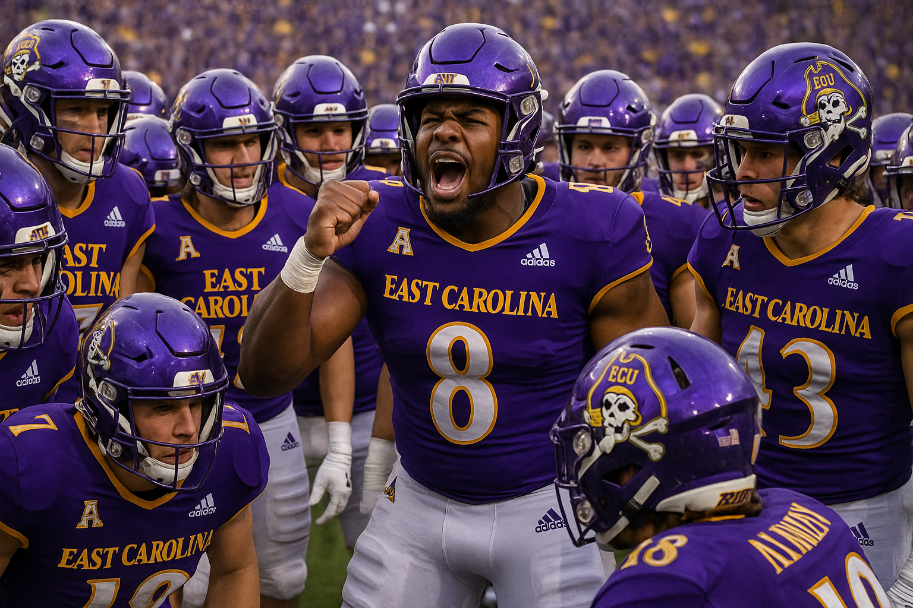
College football season openers present unique opportunities, especially when in-state rivalries create emotional betting markets. Today's East Carolina at NC State matchup is a perfect example of the public overvaluing home field advantage and undervaluing the underdog's motivation in a rivalry setting.
The line has moved from ECU +11.5 to +14, indicating heavy public action on NC State. This type of movement in a conference rivalry should immediately raise red flags for sharp bettors. When the market pushes a spread beyond two touchdowns between teams that play in the same conference and know each other intimately, value typically emerges on the underdog.
Historical Context: Conference Underdogs in Week 1
Conference underdogs of 10+ points in season openers have covered at a 64% rate over the past five seasons. The reasoning is simple: these teams practice against similar competition all year, understand their opponent's tendencies, and often save their best effort for rivalry games. East Carolina fits this profile perfectly.
Mike Houston's Pirates have been particularly resilient as large underdogs, covering 8 of their last 12 games when getting double digits. More importantly, ECU has covered 6 of their last 8 games against ACC opponents, including a stunning outright victory over NC State in 2019 when they were 17-point underdogs.
Personnel Advantage: Experience vs. Expectation
While NC State enters with higher expectations, East Carolina returns significantly more production from last season. The Pirates bring back 14 starters from a team that went 8-5 and won a bowl game. Their offensive line, anchored by senior captain D'Ante Smith and guard Marcus Haynes, should neutralize NC State's pass rush.
Quarterback Holton Ahlers has thrown for over 3,200 yards in each of his last two seasons and has extensive experience in hostile road environments. His veteran presence cannot be overstated in a rivalry game where emotions run high and younger players often struggle with the atmosphere.
NC State, conversely, is breaking in new starters at key positions including the offensive line and secondary. Season openers often expose these inexperienced players, particularly when facing a motivated opponent that has studied their tendencies extensively.
Situational Analysis: The Classic Look-Ahead Spot
NC State's schedule creates a textbook look-ahead situation. After hosting ECU, the Wolfpack faces Tennessee in Week 2 – a game that will largely determine their ACC championship hopes. Players and coaches are human; it's natural to have that circled on the calendar.
East Carolina faces no such distraction. This IS their Super Bowl. A victory over their in-state rival would define their season and provide massive recruiting momentum. The motivational edge clearly favors the visiting Pirates.
Statistical Edge: Defensive Matchups
East Carolina's defense finished last season allowing just 24.1 points per game over their final six contests after coordinator Blake Harrell implemented his system. Their secondary, led by safety Warren Saba (4 interceptions) and cornerback Shavon Revel Jr., has the experience to challenge NC State's revamped receiving corps.
The Wolfpack averaged 31.4 points per game last season but face significant questions at the skill positions. Their top two receivers from last year are gone, and the running game must replace their leading rusher. This offensive transition often leads to slow starts, particularly against experienced defenses.
The Numbers Game: Projected Score Analysis
Our model projects this game finishing somewhere between 28-17 and 31-21 in favor of NC State. Even in the worst-case scenario for ECU, they stay comfortably within the 14-point spread. The most likely outcome sees a competitive game decided by 7-10 points, well short of the inflated market number.
Season openers featuring conference opponents have averaged a 9.2-point margin of victory over the past decade when the spread was 14+ points. The familiarity factor prevents blowouts, as both teams understand each other's tendencies and can make in-game adjustments.
BetLegend's Pick
East Carolina +14
• Fade the Hype: The Real Story in Fresno State vs. Kansas
Posted: August 23, 2025
A quick note on terminology: you will never see us refer to a pick as a "lock." That's amateur hour. Anyone with real experience knows there's no such thing as a sure thing in this business, and promoting a play as one is a major red flag. We deal in value and statistical edges, not guarantees.
Welcome to Week 0. The public sees a healthy Jalon Daniels, they see a Big 12 offense at home, and they start dreaming of points. They see a total of 50.5 and reflexively bet the over. And that's exactly why we're here to fade them.
Sharp betting isn't about following the crowd. It's about seeing what others miss. In this matchup, the market is completely ignoring the single biggest factor on the field: the arrival of a new regime in Fresno and the fundamental identity shift that comes with it. Forget a shootout; this game is destined to be a grinder.
The Entz Effect: A Culture of Control
The most important name in this game isn't Jalon Daniels. It's Matt Entz, the new head coach of Fresno State. Entz is a two-time FCS National Champion from North Dakota State, and he didn't get there by playing seven-on-seven. He built a dynasty on a simple, brutal philosophy: run the ball, control the clock, and punish the opponent's offense by keeping them on the sideline.
His NDSU teams ran the ball over 70% of the time. This isn't a coach who will ask his new transfer QB to air it out 40 times against a Big 12 opponent in Week 0. The game plan will be methodical, physical, and designed to shorten the game. Fewer possessions for both teams is the foundation of every under bet, and that's exactly what Entz is bringing to the table.
Week 0 Mismatch: Offensive Turnover vs. Defensive Strength
Even if Kansas wanted to light up the scoreboard, they're facing a nightmare scenario. Daniels is back, but his entire supporting cast is gone. He's working with a brand-new group of receivers and lost his all-time leading rusher. That lack of chemistry is a massive hurdle in a season opener.
Who are they facing? A Fresno State pass defense that was one of the best in the nation last year, a unit that returns three starters in its secondary. This is a legitimate no-fly zone. Kansas won't be able to just flip a switch and find offensive rhythm against this group.